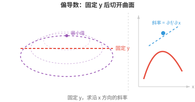
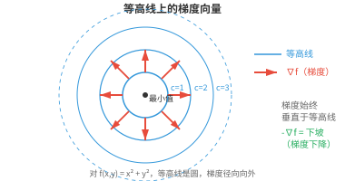

多元微积分（Multivariate Calculus）¶
多元微积分将导数和积分扩展到多变量函数。由于机器学习（ML）模型拥有数百万个参数，这一点至关重要。本节介绍偏导数、梯度、雅可比矩阵、海森矩阵，以及使反向传播成为可能的多元链式法则。
- 到目前为止，我们讨论的函数都接收单一输入 \(x\)，并产生单一输出 \(f(x)\)。但在 ML 中，我们几乎从不只处理一个变量。
大白话
前面是一个旋钮控制一个结果；真实模型通常有很多输入和参数同时影响一个或多个结果。
- 考虑一个二元函数，例如 \(f(x, y) = x^2 + y^2\)。它在三维空间中定义了一个曲面，即碗状曲面。我们想知道：固定 \(y\) 并微小改变 \(x\) 时，\(f\) 如何变化？这就是偏导数（partial derivative）。
大白话
研究很多变量时，可以先把其他旋钮锁住，只转一个旋钮，看结果怎样变化；这就是偏导数。
- \(f\) 关于 \(x\) 的偏导数写作 \(\frac{\partial f}{\partial x}\)。计算它时，将其他每个变量都视为常数，再像通常一样对 \(x\) 求导。
大白话
对 \(x\) 求偏导时，暂时假装 \(y\) 等其他变量是固定数字，像做一元求导那样只处理 \(x\)。
- 对于 \(f(x, y) = x^2y + 3x - 2y\)：
大白话
同一个函数可以从 \(x\) 的角度和从 \(y\) 的角度分别看，因此会得到两个不同的变化率。
- 计算 \(\frac{\partial f}{\partial x}\) 时，我们将 \(y\) 视为常数，所以 \(x^2y\) 求导后为 \(2xy\)，\(3x\) 为 \(3\)，\(-2y\) 为 \(0\)。
大白话
因为 \(y\) 被暂时按住不动，只有含 \(x\) 的部分会产生变化；纯 \(y\) 项对这个方向没有影响。
- 计算 \(\frac{\partial f}{\partial y}\) 时，我们将 \(x\) 视为常数，所以 \(x^2y\) 求导后为 \(x^2\)，\(3x\) 为 \(0\)，\(-2y\) 为 \(-2\)。
大白话
换成只让 \(y\) 变化后，纯 \(x\) 项就不动了，而含 \(y\) 的项各自按普通求导规则处理。
- 从几何角度看，关于 \(x\) 求偏导相当于用一张平行于 \(xz\) 平面的平面，在固定的 \(y\) 值处切开三维曲面，再求所得曲线的斜率。
大白话
像把一座山沿固定方向切一刀，只看切面上的坡度；偏导数就是这条切线的坡度。

- 梯度（gradient）将所有偏导数收集为一个向量：
大白话
不必分别记每个方向的坡度，梯度把它们装进一个向量，形成当前位置的完整“上坡指示器”。
- 对于 \(f(x, y) = x^2 + y^2\)：\(\nabla f(x, y) = (2x, 2y)\)。在点 \((1, 2)\) 处：\(\nabla f(1, 2) = (2, 4)\)。
大白话
在 \((1,2)\) 处，函数沿 \(x\) 方向每单位大约增加 2，沿 \(y\) 方向每单位大约增加 4；两项合起来就是梯度 \((2,4)\)。
- 梯度有两个关键性质：
大白话
看梯度既要看它朝哪里，也要看它有多长，这两件事分别告诉我们最快增加的方向和陡峭程度。
-
方向（direction）：它指向增长最快的方向。想象一名徒步者站在山上，当前位置的梯度直接指向上坡最陡的路径。
大白话
想最快爬高，就顺着梯度箭头走；它不是随便一个上坡方向，而是最陡的那个。
-
大小（magnitude）：\(\|\nabla f\|\) 给出沿这个最陡方向的增长率。梯度大表示地势陡峭；梯度小表示地势接近平坦。
大白话
梯度箭头越长，沿最陡方向走一步时高度变化越大；接近零则说明附近很平。

- 既然梯度指向上坡，沿相反方向（\(-\nabla f\)）移动就会下坡，趋向更小的值。这个简单的思想是梯度下降（gradient descent）的基础，后续章节会详细讨论这种优化技术。现在的关键结论是：梯度告诉你“上坡”的方向，以及爬升有多陡。
大白话
要把损失降下来就反着梯度走：梯度说哪里涨得最快，负梯度就指向降得最快的方向。
- 方向导数（directional derivative）将偏导数推广开来。它不再问“\(f\) 沿 x 轴如何变化？”，而是问“\(f\) 沿任意方向 \(\mathbf{u}\) 如何变化？”。它等于梯度与一个单位向量的点积：
大白话
偏导数只测横向或纵向坡度，方向导数允许你挑任何走向，问沿这条路会升降多快。
- 对于 \(f(x, y) = x^2 + y^2\)，在 \((1, 2)\) 处沿 \(\mathbf{v} = (3, 4)\) 的方向：先归一化得到 \(\mathbf{u} = (3/5, 4/5)\)，再计算 \(D_{\mathbf{u}} f = (2, 4) \cdot (3/5, 4/5) = 6/5 + 16/5 = 22/5\)。
大白话
先把方向变成长度为 1 的箭头，才能只衡量方向而不混入步长；点积给出沿该方向每走一单位的变化率。
- 偏导数是方向沿坐标轴时方向导数的特殊情形。若某一方向的方向导数为零，函数在该点沿该方向是平坦的。
大白话
横向、纵向只是所有方向中的两种。某方向导数为 0，表示沿那条路迈出很小一步，函数值没有一阶变化。
- 等高线（contour lines），也称等值曲线（level curves），连接函数值相同的点。对于 \(f(x, y) = x^2 + y^2\)，等高线是以原点为中心的圆：不同 \(c\) 值对应 \(x^2 + y^2 = c\)。
大白话
等高线和地图上的海拔线一样，线上的所有位置高度相同；碗状曲面切出来就会是一圈圈圆。
- 等高线绝不会相交，因为一个点不可能同时有两个不同的函数值。
大白话
同一个地点不能既是 100 米海拔又是 200 米海拔，所以不同高度的线不会交叉。
- 梯度始终垂直于等高线，并从较低值指向较高值。
大白话
沿等高线走不会升高，想升得最快就必须横着穿过等高线，因此梯度和它垂直。
- 等高线间距小表示地势陡峭；间距大表示坡度平缓。
大白话
很短距离就跨过多条等高线说明高度变得快，线稀疏则说明走很远才变化一点。
- 到目前为止，我们的函数都产生单一输出。但许多函数会产生多个输出。函数 \(\mathbf{F}: \mathbb{R}^n \to \mathbb{R}^m\) 接收 \(n\) 个输入并产生 \(m\) 个输出。雅可比矩阵（Jacobian matrix）将这类向量值函数的全部偏导数组织起来：
大白话
一个输入向量变成多个输出时，需要一张表同时记录“每个输出对每个输入有多敏感”，这张表就是雅可比矩阵。
- 雅可比矩阵的每一行都是一个输出分量的梯度。对于有 3 个输入和 2 个输出的函数，雅可比矩阵是 \(2 \times 3\) 矩阵。
大白话
行对应输出，列对应输入；有几个输出就有几行，有几个输入就有几列。
- 雅可比矩阵将导数推广到向量值函数。
大白话
一元导数是一个数，标量函数的梯度是一个向量，多个输出时就需要用矩阵完整记录变化关系。
- 标量函数的导数告诉你单位输入变化会引起多大的输出变化；雅可比矩阵则告诉你每个输出如何随每个输入变化。
大白话
它可以看作多输入、多输出系统的灵敏度表：改动某个输入，会逐格影响哪些输出、影响多大。
- 雅可比行列式（determinant of the Jacobian）衡量一个变换在局部将空间拉伸或压缩的程度。
大白话
在很小范围内，它告诉你一小块橡皮膜经过变换后面积或体积被放大、缩小了多少倍。
- 若行列式为 2，小区域的面积会加倍。若其为 0，变换会将空间压扁到更低的维度。回忆矩阵章节：零行列式表示变换奇异且不可逆。
大白话
值为 2 就是局部面积翻倍；值为 0 则把一块面压成线或点，丢失信息后自然无法倒推回原状。
- 将多个变换复合时，即一个变换的输出送入下一个变换，整体映射的雅可比矩阵是各个雅可比矩阵的乘积。后续章节中，这个思想将成为核心。
大白话
连续经过多道变换时，每一道如何放大或转向变化会依次叠加，数学上用雅可比矩阵相乘表示。
- 梯度捕捉一阶信息，即斜率；海森矩阵（Hessian matrix）则捕捉二阶信息，即曲率。
大白话
梯度说当前是上坡还是下坡、坡多陡；海森矩阵进一步说这个坡正在变陡、变缓，还是朝不同方向弯曲。
- 对标量函数 \(f(x_1, \ldots, x_n)\)，海森矩阵是由全部二阶偏导数组成的 \(n \times n\) 矩阵：
大白话
海森矩阵把每个方向的“坡度变化率”以及方向之间的相互影响，都收集成一张方阵。
- 对于 \(f(x, y) = x^3 + 2xy^2 - y^3\)，梯度为 \((3x^2 + 2y^2,\; 4xy - 3y^2)\)，海森矩阵为：
大白话
先求一次导数得到当前各方向的坡度，再对这些坡度继续求导，就得到描述弯曲方式的海森矩阵。
- 对角线元素（\(6x\) 和 \(4x - 6y\)）分别告诉你：沿 \(x\) 移动时 x 方向的斜率如何变化，以及沿 \(y\) 移动时 y 方向的斜率如何变化。
大白话
对角线看各方向自己的弯曲：沿 x 走时 x 坡度怎么变，沿 y 走时 y 坡度怎么变。
- 非对角线元素（\(4y\)）告诉你：沿一个方向移动时，另一方向的斜率如何变化。
大白话
非对角线看方向之间是否互相牵连，例如往 x 方向挪一下会不会改变 y 方向的坡度。
- 克莱罗定理（Clairaut's theorem）保证：对二阶导数连续的函数，混合偏导数相等，即 \(\frac{\partial^2 f}{\partial x \partial y} = \frac{\partial^2 f}{\partial y \partial x}\)。
大白话
对足够平滑的函数，先看 x 如何影响 y 坡度，和先看 y 如何影响 x 坡度，最后会得到同一个数。
- 这意味着海森矩阵是对称矩阵。正如矩阵章节所见，这保证其特征值为实数，且特征向量正交。
大白话
混合偏导相等让海森矩阵沿主对角线两边成镜像，因此它有对称矩阵的良好性质，分析起来更可靠。
- 海森矩阵描述函数在临界点，即梯度为零的点，附近的形状：
大白话
梯度为零只说明此刻没有明显上坡方向，还不能判断是谷底、山顶还是山口；海森矩阵负责做这个判断。
-
若 \(H\) 为正定（positive definite），即所有特征值均为正，该点为局部极小值（local minimum）：曲面在每个方向都向上弯曲，形如碗。
大白话
从这个点往任何小方向走都会上升，它像碗底，所以附近没有比它更低的位置。
-
若 \(H\) 为负定（negative definite），即所有特征值均为负，该点为局部极大值（local maximum）：曲面在每个方向都向下弯曲，形如倒扣的碗。
大白话
从这个点往任何小方向走都会下降，它像山顶或倒扣碗顶，所以附近没有比它更高的位置。
-
若 \(H\) 同时有正、负特征值，该点为鞍点（saddle point）：曲面沿部分方向向上弯曲，沿另一些方向向下弯曲，形如山口。
大白话
它既不是纯谷底也不是纯山顶：沿一条路会下去，换条路却会上去，像山口中间的位置。
- 多元链式法则（multivariate chain rule）将链式法则扩展到多变量函数。若 \(z = f(x, y)\)，其中 \(x = g(t)\)、\(y = h(t)\)，则：
大白话
当 \(t\) 同时通过 x 和 y 两条支路影响 z 时，不能只看一条支路，必须把每条传递路径的影响都加起来。
- 从 \(t\) 到 \(z\) 的每条路径都会贡献一项：该路径上的偏导数，乘以中间变量关于 \(t\) 的导数。
大白话
每条路都算“这一步多敏感”乘“前一步变多快”，再把所有路的贡献相加，这就是总变化率。
- 例如，若 \(z = x^2 y + 3x - y^2\)，\(x = \cos(t)\)，\(y = \sin(t)\)：
大白话
这里 t 改变时，x 和 y 都会改变，所以公式中自然有两项，分别对应经 x 和经 y 传来的影响。
- 除了手工计算导数，还有三种方法：
大白话
导数既可以用小步长估算，也可以用符号规则推公式，还可以让程序沿计算过程自动传播；三者在速度、精度和表达式大小上各有取舍。
-
数值微分（numerical differentiation）：对很小的 \(h\)，近似计算 \(f'(x) \approx \frac{f(x+h) - f(x-h)}{2h}\)。它简单，但有噪声且不够精确。
大白话
用两个很近的点夹住目标点来估坡度，容易实现，但步长选得不合适或计算有误差时结果会不稳。
-
符号微分（symbolic differentiation）：以代数方式应用求导规则，得到精确公式。但所得表达式可能呈指数级膨胀。
大白话
它像手工推导一样给出精确表达式，但复杂计算链会让公式迅速长到难以处理。
-
自动微分（automatic differentiation，autodiff）：追踪运算链，并高效地计算精确导数。这正是 JAX、PyTorch 和 TensorFlow 所使用的方法。它给出精确的数值结果，而非近似值，又不会产生臃肿的符号表达式。
大白话
自动微分把程序的计算步骤逐个记录，再用链式法则回传导数；它不是数值猜测，也不是把整条公式完全展开。
编程任务（使用 CoLab 或 notebook）¶
-
使用
jax.grad，计算 \(f(x, y) = x^2 y + 3x - 2y\) 在点 \((1, 2)\) 处的梯度。由于 \(f\) 接收两个标量参数，分别使用带argnums的jax.grad计算各偏导数。 -
使用
jax.jacobian计算一个向量值函数的雅可比矩阵。将结果与手工计算比较。 -
使用
jax.hessian计算 \(f(x, y) = x^3 + 2xy^2 - y^3\) 的海森矩阵，并验证它是对称的。 -
从零构建一个最小自动微分引擎。
- 每个
Var跟踪自己的值，以及如何通过链式法则向后传播梯度。 - 尝试为其扩展更多运算，例如除法、幂运算等。
- 这正是 JAX、PyTorch 和 Numpy 设计方式的基础。
class Var: def __init__(self, val, children=(), backward_fn=None): self.val = val self.grad = 0.0 self.children = children self.backward_fn = backward_fn def __add__(self, other): out = Var(self.val + other.val, children=(self, other)) def _backward(): self.grad += out.grad # d(a+b)/da = 1 other.grad += out.grad # d(a+b)/db = 1 out.backward_fn = _backward return out def __mul__(self, other): out = Var(self.val * other.val, children=(self, other)) def _backward(): self.grad += other.val * out.grad # d(a*b)/da = b other.grad += self.val * out.grad # d(a*b)/db = a out.backward_fn = _backward return out def backward(self): # topological sort then propagate gradients # we will go through this in data structures and algorithms order, visited = [], set() def topo(v): if v not in visited: visited.add(v) for c in v.children: topo(c) order.append(v) topo(self) self.grad = 1.0 for v in reversed(order): if v.backward_fn: v.backward_fn() # f(x, y) = x*x*y + x at (3, 2) x = Var(3.0) y = Var(2.0) f = x * x * y + x # = 3*3*2 + 3 = 21 f.backward() print(f"f = {f.val}") # 21.0 print(f"df/dx = {x.grad}") # 2*x*y + 1 = 13.0 print(f"df/dy = {y.grad}") # x*x = 9.0
- 每个